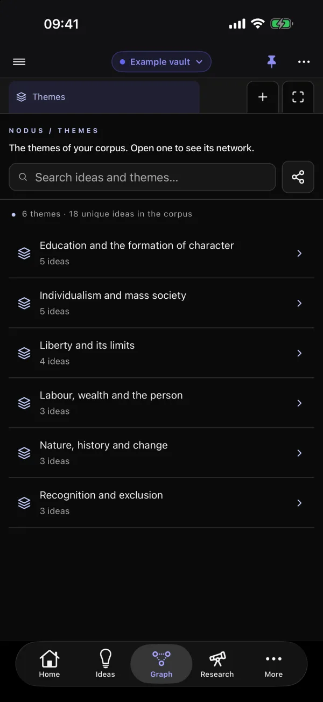
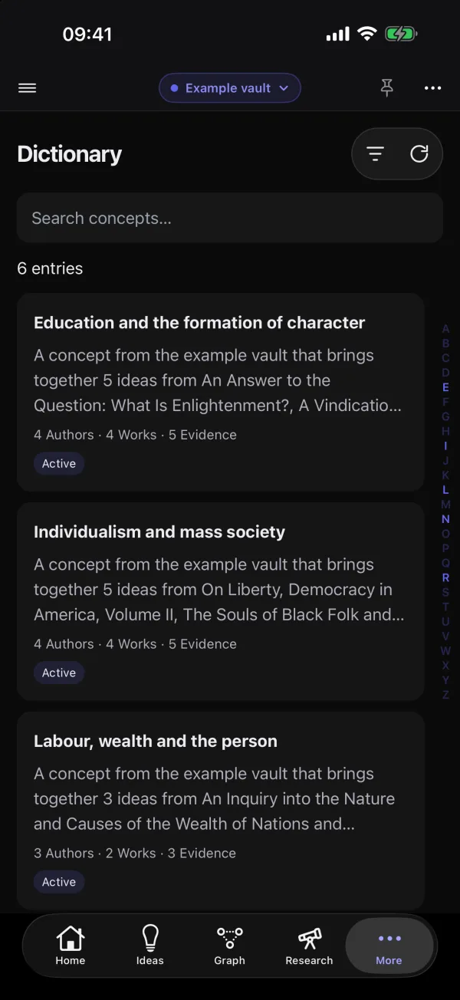

Nodus Link
Your research, wherever you go
Nodus Link brings the research you build in Nodus Research to your iPhone and iPad. Your desktop keeps the data and serves it to the phone over a private connection.
iPhone · iPad · iOS 18.4 or later · Works with Nodus Research 5.18 or later
Part of the Nodus family · GitHub · Privacy
Your vault in your pocket
Pair the phone with Nodus Research once, with a code, a QR or a link, and open your academic research wherever you are.
Pair with a code, a QR or a link. The connection goes straight to your computer over your local network or VPN.
Nothing goes through a cloud. Nodus Research on the desktop keeps the data and acts as the server.
Start from the sections you use most: ideas, graph, argument map, Deep Research, dictionary and podcasts.

Follow how ideas connect
Browse the themes of your corpus and the argument map, ranked by the connections and debates already in your vault.
Themes and their ideas, the same structure as the desktop graph.
The argument map ranks claims by their links and the debates around them.
Every idea keeps its sources and the relations that support or contradict it.

Read and listen
Read the concepts of your dictionary and your saved Deep Research reports, and listen to the podcasts you made on the desktop.
The dictionary, with definitions, evidence, authors and works for every concept.
Deep Research reports with their sources and saved translations.
Saved podcasts with chapters, transcript and lock-screen controls.

Free to use. Yours to keep.
Nodus Link is open source under the AGPL-3.0-only licence. It has no account and no cloud: your phone talks only to your own computer.
One family of tools for research.
Nodus Link is one of the free, open-source apps made by Nodus Research.